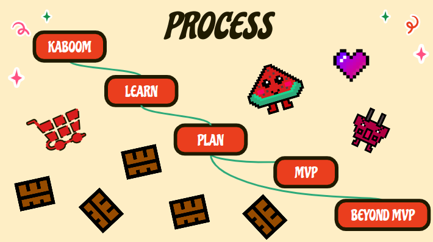

SEP11 Freedom Project
Context:
The "Freedom Project" for SEP11 is all about creating an interactive program that uses Javascript (JS = coding language) and a tool of one's own choice (JS library, framework...etc). The purpose of this blog is to show how Javascript can be used to make a functional interactive program which can be applied to the real world.
Content:
I created a platformer game using JS and Kaboom.js (tool I learned on my own). I started off by creating a minimal viable product (simplist functioning product), than added touches to improve it, and finally created a presentation to communicate my results to audiences. In this summary, I will reflect on my experiences now that I'm finished with the product.
Challenges:
- Creating the Sprites: The "characters" for my game took days to create part of the reason was that it was my first time using pixels to create art, but also because they weren't turning out the way I visioned them. After several attempts with the feedback from others, I was able to complete them.
- Asking for help: Initially, I restrained myself from asking for help from others because I took the "learning on your own" part to seriously. It was only after I couldn't figure out how to make my sprite closer to the ground that I asked for help from my peers.
- Improvise: Once I had finished my game, I had to present, so in my head I made a "perfect" plan as to what/when I wanted to say something, but it didn't completely work. In both the short and long presentation, I got distracted. One of them was by a teacher who wanted to try out my game when I was being judged and the other one was by the laughter of my engaged peers. In both moments, my mind went blank for a second, but I told myself to calm down and with my improvisation skills I ended up giving successful presentations.
Takeaways:
- Patience: As I created the sprites, I struggled a lot, but I tried my best to stay calm and have a positive attitude. After I finished them, I realized that I had preservered and getting frustrated wasn't going to get me anywhere.
- Growth Mindset: I reaffirmed that asking someone for help, isn't bad, nor is learning on your own, but if you have no idea what to do next, reach out and somone will hold their hand out for you.
- Perfection: From my presentations, I learned that you can prepare for weeks for anything, but there is always room for error. This doesn't mean that your doomed, it's just testing your readiness to overcome obstacles on the spot.
Next Steps:
I am part of the top 3 projects among the 11th grade Software Engineering Program, so I'm going to practice for the final presentation in an auditorium with many people to show what I've created this year (2022-2023).
Links:
Blogs
THE GAME
